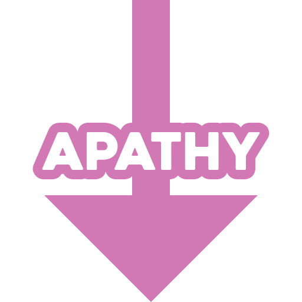
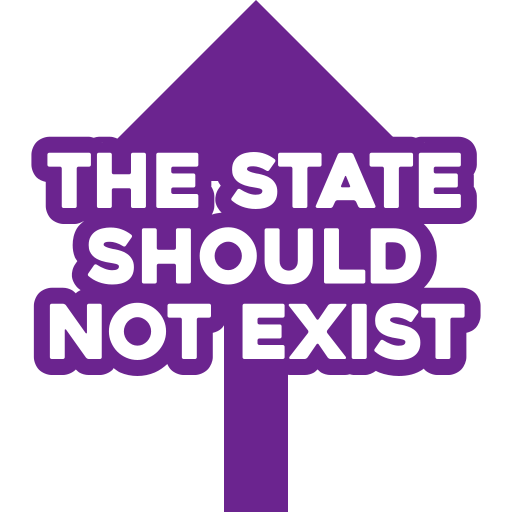
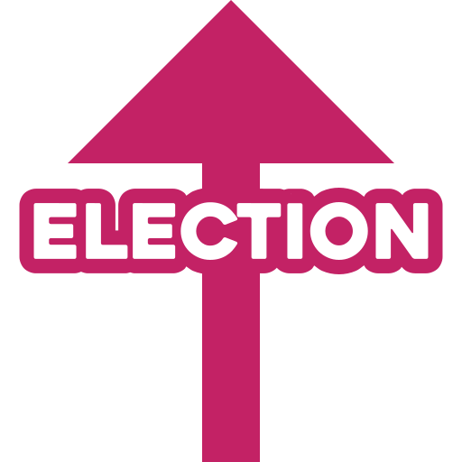

State corporatism
Autocratic capitalism
Social authoritarianism
Should compliant citizens receive extensive welfare?
State capitalism
Yellow socialism
Should worker unions be supported in their struggle for higher wages?
Should the state get involved in the allocation of capital?
Kraterocracy
Combatocracy
Absolute monarchy
Hereditary monarchy
Right-libertarianism
Paleolibertarianism
Clerical fascism
Should profession groups partake in policy making?
Theocracy
Should the government engage in secular legislation?
Should the weak be subjugated?
Should the sovereign be equivalent to the state?
Elective monarchy
Will a smaller government cause a return to traditional values?
Neo-libertarianism
Fascism
Should the clergy be part of the government?
Should the state have a role in all aspects of society?
Divine monarchy
Where should the sovereign's legitimacy come from?
Who should hold the power to select the ruler?
Neocameralism
Should liberty be spread around the globe by force?
Jacobinism
Should we secure the nation through a rebirth or revival?
Should we be devoted to a race superior to all others?
Who should assume state functions?
Noocracy
Minarchism
Should private property be made as widely owned as possible?
Libertarian distributism
Should there be a universal basic income?
Should a system of castes be in place?
What gives that race such superiority?
Esoteric fascism
Should private property be made as widely owned as possible?
Should a constitution limit the government's scope?
Should the role of the state be limited to law enforcement and defense?
Avaritionism
Should the only tax be a levy on public resource usage?
Social libertarianism
Orwellianism
How should control over society be ensured?
National socialism
Should land rents be repaid to society?
Should people's needs be met unconditionally?
Should the state be opposed through illegal trade?
Should coercive markets be tolerated?
Agorism
Geolibertarianism

Fordism
Should the revenue from land rents be spent on welfare?
Should traditional values be promoted?
Social distributism
Distributism
Should private property be made as widely owned as possible?
Is earning rent from the land a form of theft?
Geo-anarchism
Georgism
Social georgism
Should people's needs be met unconditionally?
Should a social safety net protect the poor?
Paternalistic conservatism
Anarcho-distributism
Will cooperatives dominate the free market?
Left-rothbardianism
Neoliberalism
Third way
Should the economy be tightly regulated?
Ordoliberalism
Social democracy
Should the government intervene in wars overseas?
Mesoconservatism
Will covenant communities revive traditional norms?
Nilssonianism
Neoconservatism
Which gives the most power globally?
Should social mobility be promoted through state spending?
Should big businesses have more social responsibilities?
Social liberalism
Paleoconservatism
Anarcho-capitalism
How should separation of covenants occur?
Hoppeanism
Syndicalism
Libertarian socialism
Market socialism
Guild socialism
Market anarchism
Mutualism
Anarcho-syndicalism
Sorelianism
Should society be organized through unions?
Agrarian socialism
Should public services be competitive?
Should the economy be based on mutual credit?
Should communities be ethnically homogenous?
National anarchism
Should we adopt the myth of our victory as our movement's unifier?
Libertarian municipalism

Should the economy be centered on agriculture?
Democratic socialism
Technocracy
Should the state be governed by a single, central party?
Should central planners allocate resources and industry?
Langean socialism
Anarcho-collectivism
Should society be organized through unions?
Should the state be opposed through local direct democracy?

Should socialism be built and maintained through centralized authority?
Which way should be used to bring about change?
Should an expert committee optimize distribution to eliminate scarcity?
Should goods be distributed through markets?
Titoism
Should labor vouchers be given in exchange for work?
Should agriculture be practiced?
Should the working class be organized by a group of tacticians?
Platformism
Fourth theory
Should we create multipolarity between civilizations?
Should we reach a classless, stateless, moneyless society?
Is a transitory state required for this?
Should capitalist relations be socialized through armed insurrection?
Communization
Anarcho-primitivism
Classical social democracy
Anarcho-communism
State socialism
Should the nation come before all else?
Strasserism
Should proletarian organization be based on democratic centralism?
Should there be a vanguard party to lead the working class?
Should communists participate in parliamentary politics?
Should we reform capitalism on the short term?
De leonism
National syndicalism
Should state-coordinated unions organize society?
Should agriculture be the main focus of the economy?
Is socialism possible in a single country?
Trotskyism
Should proletarian revolution be that of everyday life?
Will the dictatorship of the proletariat be a party dictatorship?
Dutch-german left communism
National bolshevism
Are jews the cause for harsh worker conditions?
Niekischism
Should commodity production occur under socialism?
Should communists support national liberation?
Situationism
Should there be a dictatorship of the proletariat?
Is an exit back in nature the only way to escape capitalism?
Bordigism
Limonovism
How should the will of the people be executed?
Marxism-leninism
Should protracted guerrilla warfare be used to remove the old society?
Bukharinism
Damenism
Council communism
Libertarian marxism
Camattism
Third international theory
Is giving resource precedence to the military necessary?
Should the revolution's main priority be the nation's liberation?
Are these tactics applicable across all countries?
Should civilians be allowed to run independent enterprises?
Dengism
Juche
National communism
Marxism-leninism-maoism
Is the first world working class an anti-revolutionary one?
Maoism-third-worldism
Maoism